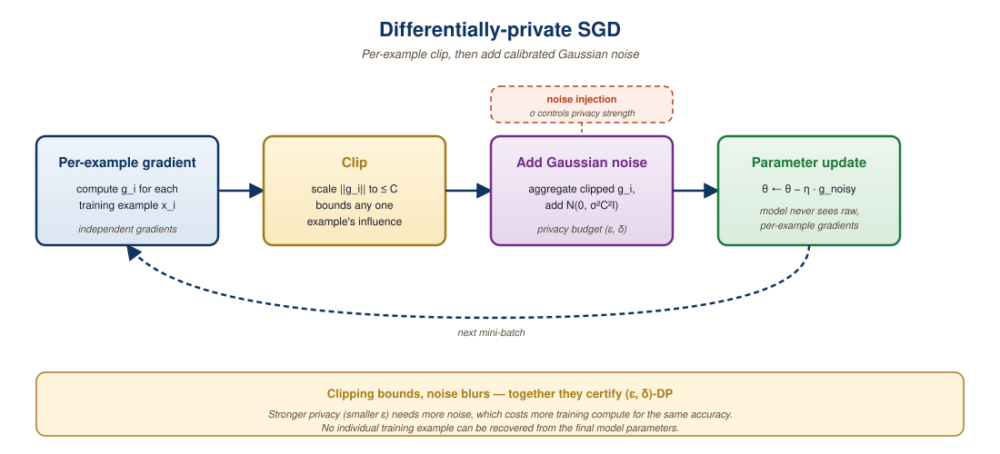

Open weights do not mean open season. Read the license before you ship the product.
A Transparent Guard, License-Reading AI Agent
The legal landscape for LLMs is complex and unsettled. Model licenses range from fully open (Apache 2.0) to restrictive "open weight" releases with acceptable use policies. Who owns the intellectual property in LLM outputs remains legally uncertain. Training data copyright is actively litigated. And privacy requirements demand technical solutions like anonymization and differential privacy. Engineers must understand these issues to make defensible deployment decisions. The open-weight model landscape from Section 8.2 provides context for understanding how license terms shape the ecosystem.
Prerequisites
Before starting, make sure you are familiar with governance and audit from Section 49.5, the fine-tuning fundamentals from Section 18.1 (since model licensing affects which models you can fine-tune), and the pretraining data considerations from Section 7.1 that underpin copyright concerns.
55.7.1 Model License Taxonomy
| License Type | Commercial Use | Modification | Examples |
|---|---|---|---|
| Apache 2.0 | Yes, unrestricted | Yes | Mistral 7B, Phi-3 |
| MIT | Yes, unrestricted | Yes | Some small models |
| Llama Community | Yes (under 700M MAU) | Yes | Llama 3, Llama 3.1 |
| Gemma Terms | Yes (with restrictions) | Yes | Gemma, Gemma 2 |
| CC-BY-NC | No | Yes (non-commercial) | Some research models |
| Proprietary API | Per ToS | No access to weights | GPT-4o, Claude, Gemini |
Meta's Llama license allows commercial use only if you have fewer than 700 million monthly active users. This threshold conveniently excludes exactly the companies Meta competes with, while letting virtually every other organization on Earth use it freely.
Figure 55.7.1 places these license types on an openness spectrum, from fully permissive Apache 2.0 to proprietary API-only access.
Mental Model: The Property Deed Spectrum. Model licenses are like different forms of property ownership. Apache 2.0 is owning land outright: build whatever you want, sell it, modify it freely. The Llama Community License is like a condo with HOA rules: you own your unit and can renovate, but there are restrictions on commercial activity above a certain scale. CC-BY-NC is a rental agreement: you can live there but cannot run a business from the property. Proprietary API access is a hotel room: you get the service but own nothing, and the management can change the terms or close the hotel at any time.
# implement check_license_compatibility
def check_license_compatibility(model_license: str, use_case: dict) -> dict:
"""Check if a model license permits the intended use case."""
rules = {
"apache-2.0": {"commercial": True, "modification": True, "distribution": True},
"llama-community": {"commercial": True, "modification": True,
"distribution": True, "mau_limit": 700_000_000},
"cc-by-nc-4.0": {"commercial": False, "modification": True, "distribution": True},
}
license_rules = rules.get(model_license, {})
issues = []
if use_case.get("commercial") and not license_rules.get("commercial"):
issues.append("Commercial use not permitted")
if use_case.get("mau", 0) > license_rules.get("mau_limit", float("inf")):
issues.append(f"MAU exceeds license limit of {license_rules['mau_limit']:,}")
return {"compatible": len(issues) == 0, "issues": issues}
result = check_license_compatibility(
"llama-community",
{"commercial": True, "mau": 500_000}
)
print(result)The "Section 20.1 tax" is the performance cost of making a model safe. RLHF and safety fine-tuning typically reduce raw benchmark scores by 2 to 5%, but they dramatically improve user experience and reduce harmful outputs. Teams that skip alignment to maximize benchmark performance eventually face the much higher cost of public incidents and trust erosion.
In 2023, Samsung engineers accidentally leaked proprietary source code by pasting it into ChatGPT for debugging help. The incident led Samsung to ban all generative AI tools company-wide for several months. The irony: the code was leaked while trying to save time, and the resulting security review consumed far more engineering hours than the original debugging task would have.
The licensing landscape for LLMs is evolving rapidly as courts hear the first wave of copyright cases related to AI training data. For practitioners, the safest approach is to maintain a clear audit trail of which models and datasets your system depends on, understand the license terms for each, and design your pipeline so that you can swap components if a license changes or a court ruling invalidates your current approach. The model inventory practices from Section 49.5 provide the organizational infrastructure for this kind of tracking.
Before choosing an open-weight model for production, read the full license text, not just the license name. "Apache 2.0" and "MIT" are straightforward, but many models use custom licenses (Llama Community License, Gemma Terms of Use) that include usage restrictions the common name does not convey. Some prohibit use above a revenue threshold, others restrict certain industries. A five-minute license review can save your legal team months of remediation.
55.7.2 Differential Privacy for LLM Training
Differential privacy (DP) adds calibrated noise during training so that no individual training example can be recovered from the final model. Code Fragment 55.7.2 below simulates a DP-SGD gradient step with per-sample clipping and Gaussian noise injection.
# implement dp_sgd_step
import torch
import numpy as np
def dp_sgd_step(gradients: list, clip_norm: float, noise_scale: float, lr: float):
"""Simulate a DP-SGD gradient step with clipping and noise."""
clipped = []
for grad in gradients:
grad_norm = np.linalg.norm(grad)
clip_factor = min(1.0, clip_norm / (grad_norm + 1e-8))
clipped.append(grad * clip_factor)
# Average clipped gradients
avg_grad = np.mean(clipped, axis=0)
# Add calibrated Gaussian noise
noise = np.random.normal(0, noise_scale * clip_norm / len(gradients), avg_grad.shape)
noisy_grad = avg_grad + noise
return {
"update": -lr * noisy_grad,
"avg_clip_factor": np.mean([min(1, clip_norm / (np.linalg.norm(g) + 1e-8)) for g in gradients]),
"noise_magnitude": np.linalg.norm(noise),
}
# Simulate with 4 per-sample gradients
grads = [np.random.randn(10) * s for s in [0.5, 2.0, 0.3, 1.5]]
result = dp_sgd_step(grads, clip_norm=1.0, noise_scale=0.5, lr=0.01)
print(f"Avg clip factor: {result['avg_clip_factor']:.3f}")
print(f"Noise magnitude: {result['noise_magnitude']:.4f}")The DP-SGD mechanism applies two operations to protect individual training examples.
